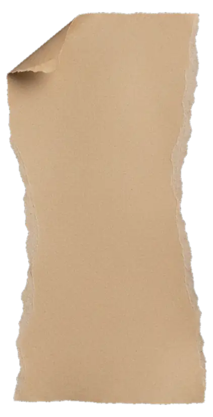
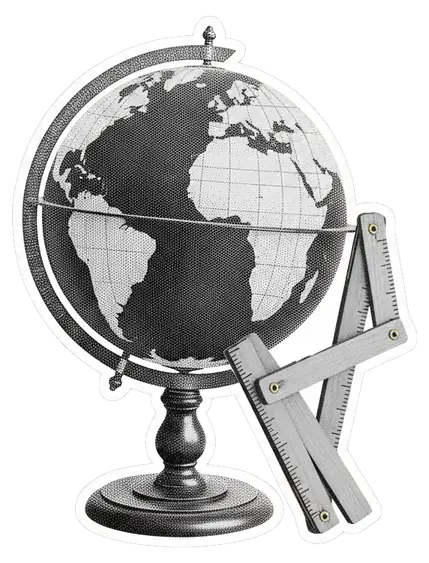
Simulador Sua vida global
Sete perguntas para descobrir quanto custa a sua vida em dólar, o patrimônio que paga essa vida e quanto guardar por mês.
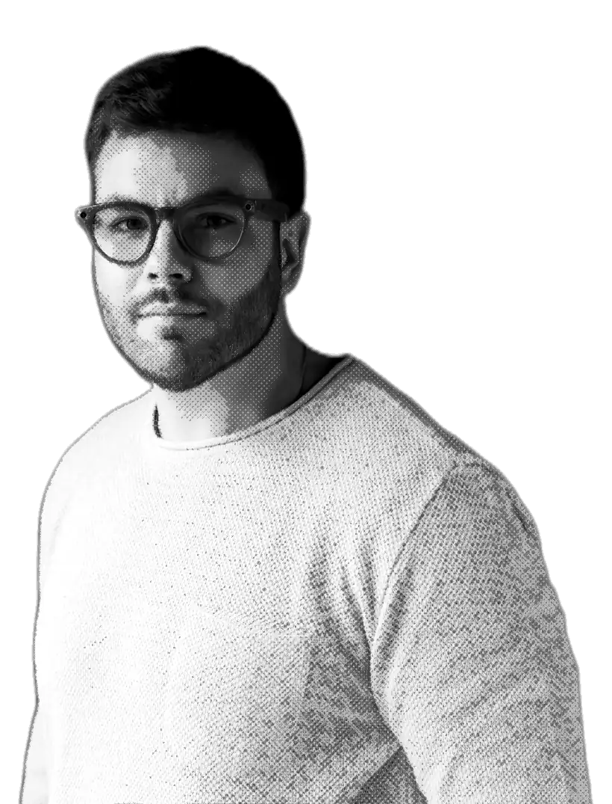
Entenda como planejar sua liberdade financeira de forma global.
Quanto você precisa poupar ao mês para atingir sua independência em dólar?
Fazer meu planejamento globalA vida que custa R$ 20.000 por mês no Brasil custa US$ 4.486 em Portugal e US$ 8.032 nos Estados Unidos. O câmbio diria US$ 3.704 nos dois.
O dólar de verdade
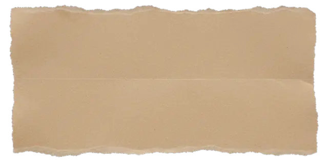
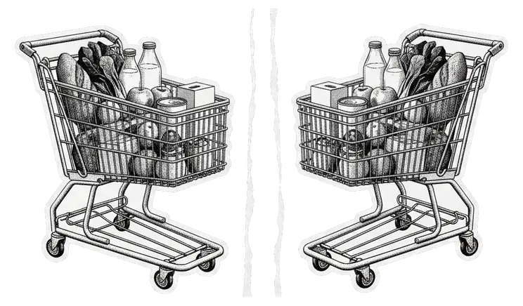
Trocar dinheiro é uma coisa. Encher o mesmo carrinho de supermercado é outra. O câmbio só responde à primeira.
Para planejar a sua liberdade até 2050, a régua é o que o dinheiro compra em cada lugar. O simulador faz essa conta para 66 países e devolve três coisas: um número, uma data e o caminho até eles.
Faça a conta.
Fazer meu planejamento globalPoder de compra: Banco Mundial, Programa de Comparação Internacional, 2024, via Our World in Data. Média nacional de cada país; capitais costumam custar mais. Câmbio de referência: R$ 5,40.
Simulação educativa do Projeto 2050. Não é recomendação de investimento.
O que você encontra aqui, do gratuito ao acompanhamento individual.


Sete perguntas para descobrir quanto custa a sua vida em dólar, o patrimônio que paga essa vida e quanto guardar por mês.
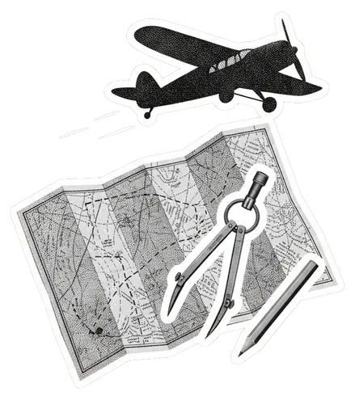
20 trilhas de formação, o Plano de Voo até 2050, orçamento e patrimônio num só lugar e uma comunidade sem saldos à mostra.
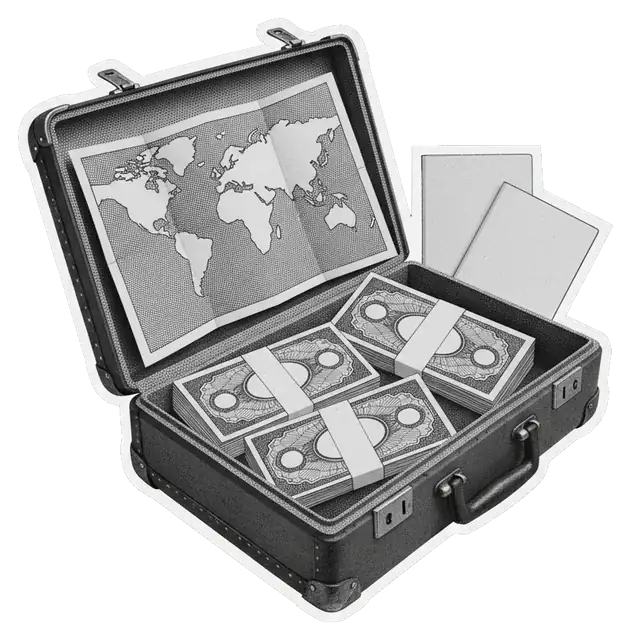
Para empresários e investidores com patrimônio a partir de R$ 1 milhão que querem organizar a vida e o patrimônio em mais de uma moeda.
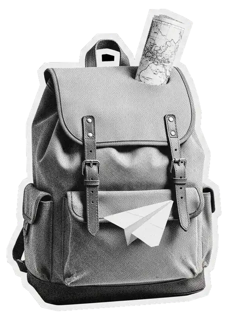
Formação para jovens de 12 a 25 anos se tornarem cidadãos globais e livres. Os pais assinam; o jovem usa.
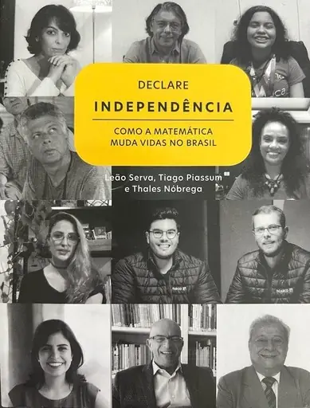
Como a matemática muda vidas no Brasil. Os fundamentos econômicos e estratégicos para tomar as rédeas da própria vida financeira.
Trilhas concluídas de 20. Mede o que você aprendeu e praticou.
Patrimônio atual comparado à sua meta para 2050, em valores de hoje.
Valores de exemplo. As duas medidas são independentes: concluir as 20 trilhas não significa atingir a liberdade financeira.
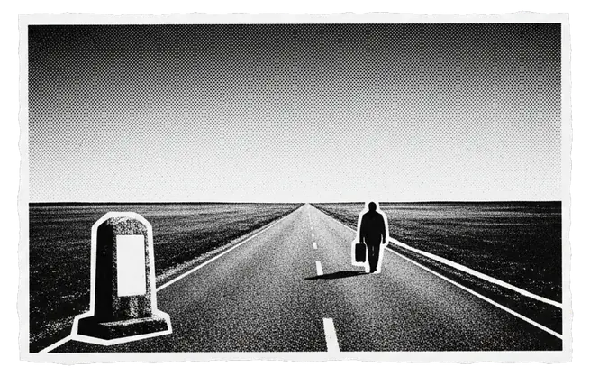
Uma comunidade por assinatura que junta educação, um Plano de Voo de longo prazo, o seu patrimônio consolidado e os gastos do dia a dia. O resultado do simulador é o começo desse plano.
O Projeto 2050 é educação e acompanhamento: não faz custódia, não executa ordens e não dá recomendação individual de investimento.
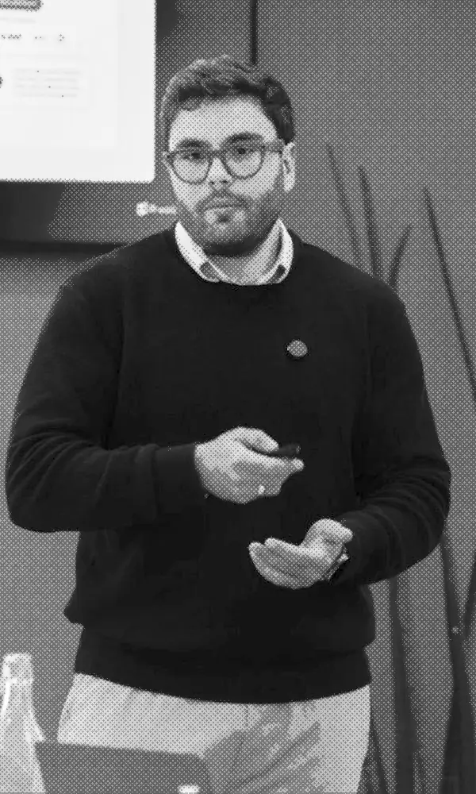
Do número ao plano de vida
Para empresários e investidores com patrimônio a partir de R$ 1 milhão que buscam clareza, estrutura e decisões alinhadas aos seus projetos de vida, dentro e fora do Brasil.
O simulador dá o número. A consultoria trata do que vem depois: onde viver, em que moeda manter o patrimônio e como organizar tudo até 2050.
As premissas ficam à vista. É uma simulação educativa, não uma promessa de retorno.
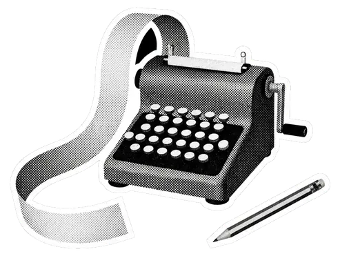
O seu custo de vida em reais é convertido pelo que o dinheiro compra em cada lugar, e não pela cotação do dia.
custo em R$ ÷ PPC do Brasil ÷ índice do seu estado × nível de preços do destino
A vida global é o patrimônio que paga esse custo mensal em dólar tirando 0,4% por mês.
custo mensal em US$ ÷ 0,4% ao mês = sua vida global
O que você já tem e o que guarda por mês são projetados até a idade em que quer viver de renda.
hipótese: 4% ao ano acima da inflação, em dólar · câmbio de R$ 5,40
Nível de preços e paridade de poder de compra: Banco Mundial, Programa de Comparação Internacional (2024), via Our World in Data. O nível de preços é a média nacional de cada país; capitais costumam custar mais.
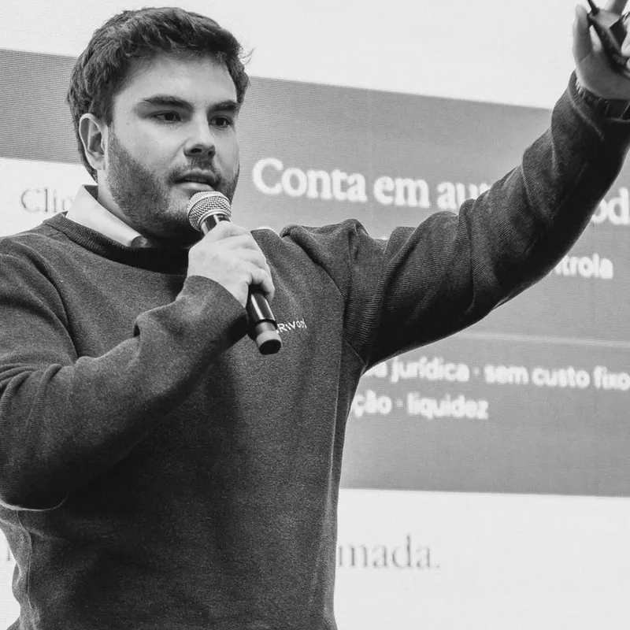
Tiago Piassum é economista, empreendedor e especialista financeiro. Fundou a Marco Investimentos, assessoria que saiu do zero ao bilhão de custódia em três anos, e hoje está à frente da Rivool, fintech global de investimentos globais em dólar.
É autor do livro “Declare Independência” e criou o Projeto 2050 para dar método a quem quer construir liberdade real e global. 20 trilhas de 20 temas para você ser livre globalmente até 2050.
Sim. Você responde sete perguntas e vê a sua vida global na hora. Para liberar o relatório completo, com o plano mensal e as alavancas, pedimos seu nome e e-mail. O WhatsApp é opcional.
Não. O lugar serve para medir a sua vida em dólar. Muita gente usa o número para decidir quanto do patrimônio manter em moeda forte, mesmo ficando no Brasil. O relatório mostra os dois valores.
O nível de preços dos 66 países e a paridade de poder de compra do Brasil vêm do Banco Mundial, Programa de Comparação Internacional (2024), via Our World in Data. O câmbio de referência e as demais premissas aparecem no relatório.
Não. É uma simulação educativa, com hipóteses de retorno e de retirada que ficam à vista. O Projeto 2050 não faz custódia, não executa ordens e não dá recomendação individual de investimento.
Uma comunidade por assinatura com 20 trilhas de formação, o Plano de Voo até 2050, orçamento, patrimônio consolidado e comunidade. Abre em breve. Quem faz a simulação entra na lista de espera e recebe o aviso primeiro.
Usamos seu nome, e-mail e WhatsApp para enviar seu plano, avisar sobre o lançamento do Projeto 2050 e mandar conteúdos. Não vendemos nem compartilhamos seus dados. Para sair ou pedir a exclusão, responda qualquer mensagem nossa.
Pelo câmbio, a resposta é a mesma em qualquer país. Na vida real, não é. A régua certa muda o plano inteiro.
Fazer meu planejamento globalSete perguntas · 2 minutos · gratuito
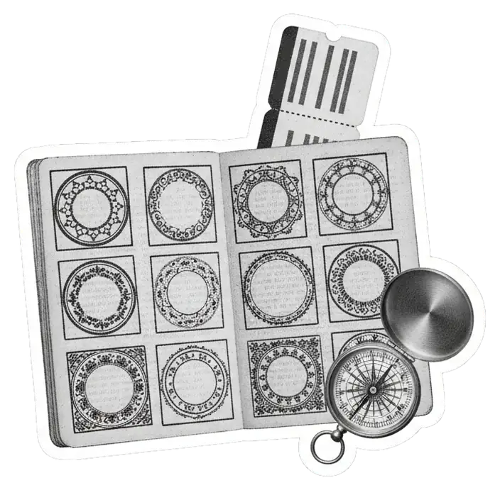